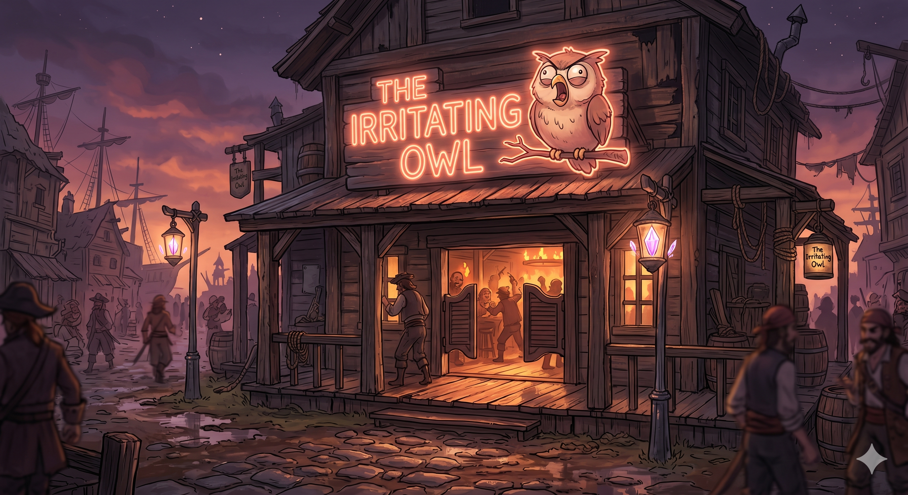

A tavern on the east side of Wombat Island. It has a large logo of an owl sitting on a branch with its beak open, displayed on a bright neon sign above saloon-style swinging doors. The interior is dimly lit by torches and a blazing fireplace, with a bar counter and tables. Human patrons warm themselves by the fire. Captain K’her stays here, and it becomes the site of his confrontation with Kegan. Blobby later visits looking for Tasha. Appears in: Couch Potato Crisis
Location details
- Appears in: Couch Potato Crisis
- Description: A tavern on the east side of Wombat Island. It has a large logo of an owl sitting on a branch with its beak open, displayed on a bright neon sign above saloon-style swinging doors. The interior is dimly lit by torches and a blazing fireplace, with a bar counter and tables. Human patrons warm themselves by the fire. Captain K’her stays here, and it becomes the site of his confrontation with Kegan. Blobby later visits looking for Tasha.
- References: Couch Potato Crisis: Chapter 11 - The Secret of Wombat Island, Chapter 20 - Blobby
